NAVA Research 2025
Voices from 890 Australian creative practitioners
Charles Crabtree
Senior Lecturer, School of Social Sciences, Monash University
K-Club Professor, University College, Korea University
Overview
This survey captured the lived experiences of visual artists navigating generative AI's rapid integration into creative practice.
890Survey Respondents
85%Visual Artists &
Craftspeople
28%Regional or
Remote Practitioners
Who Responded
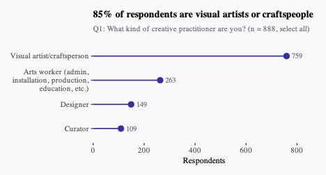
Q1: What kind of creative practitioner are you? (n = 888, select all)
Identity
Q3: Do you identify as: (n = 890, select all)
Adoption
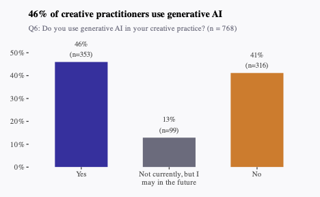
Q6: Do you use generative AI in your creative practice? (n = 768)
What They Use It For
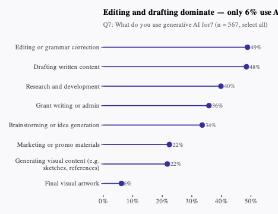
Q7: What do you use generative AI for? (n = 567, select all)
Motivation
Q8: What is your main reason for using generative AI? (n = 566)
In Their Words
"For underfunded and time poor arts workers, AI can be enormously helpful in cutting down time for certain tasks... AI has helped to not only make that workload more manageable, but also to provide a springboard for tasks which are unfamiliar or outside of existing expertise."
— Survey Respondent, Q12
Usage Patterns
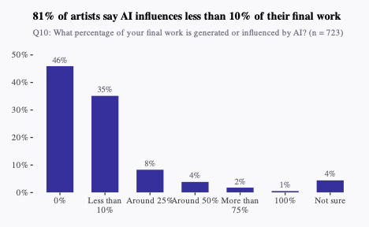
Q10: What percentage of your final work is generated or influenced by AI? (n = 723)
Positive Impacts
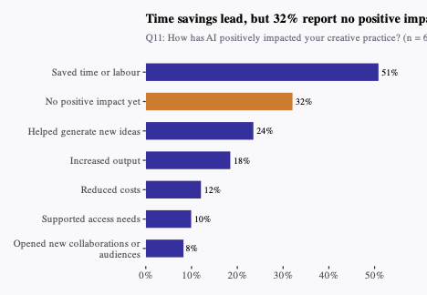
Q11: How has AI positively impacted your creative practice? (n = 655, select all)
The Other Side
Q13: Has your work been used in connection with AI without your permission? (n = 767)
When They Found Out
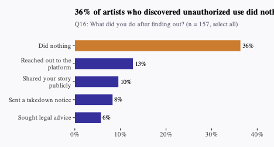
Q16: What did you do after finding out? (n = 157, select all)
In Their Words
"Your work can be taken, anytime, anywhere. AI runs in background, 24hrs/365days. Large companies pilfer ideas. Change colours or shapes. There is no recompense for original artist. Single artist does not have the legal 'buying power' of a business or corporation."
— Survey Respondent, Q19
Economic Impact
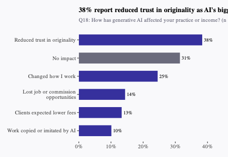
Q18: How has generative AI affected your practice or income? (n = 563, select all)
Lost Commissions
"I recently lost a commission job where the client wanted something that fell between fully cartoon and AI-generated images they sent for reference. Their own experimentation with AI negatively impacted their understanding of sketches, drafts, and revisions."
— Survey Respondent, Q19
"I am a photographer and photo editor and have lost clients to places that offer AI editing. I cannot compete with the prices... I have lost enough work and find it harder to find new clients that I am planning on changing careers."
— Survey Respondent, Q19
Transparency
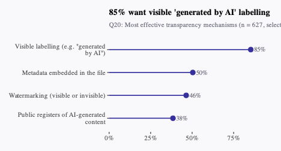
Q20: Most effective transparency mechanisms (n = 627, select all)
Disclosure
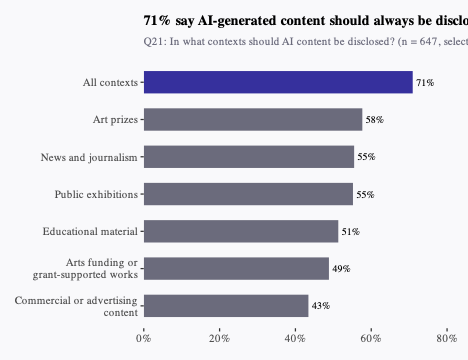
Q21: In what contexts should AI content be disclosed? (n = 647, select all)
Barriers
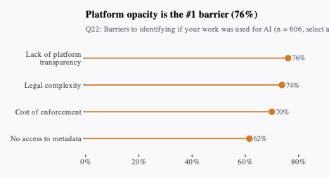
Q22: Barriers to identifying if your work was used for AI (n = 606, select all)
Regulation
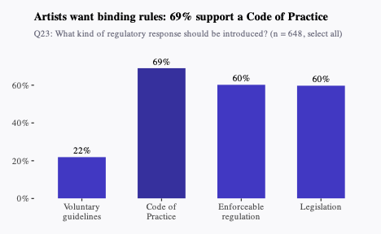
Q23: What kind of regulatory response should be introduced? (n = 648, select all)
Compensation
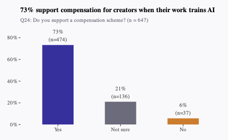
Q24: Do you support a compensation scheme? (n = 647)
Collective Licensing
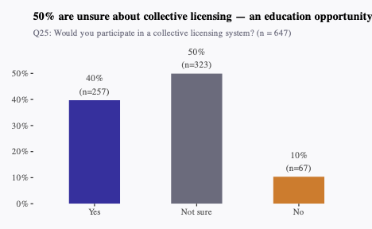
Q25: Would you participate in a collective licensing system? (n = 647)
Platform Landscape
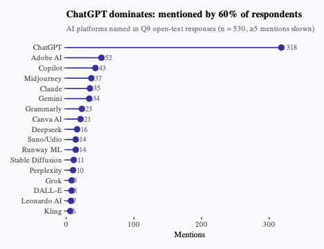
AI platforms named in Q9 open-text responses (n = 530, ≥5 mentions shown)
Themes
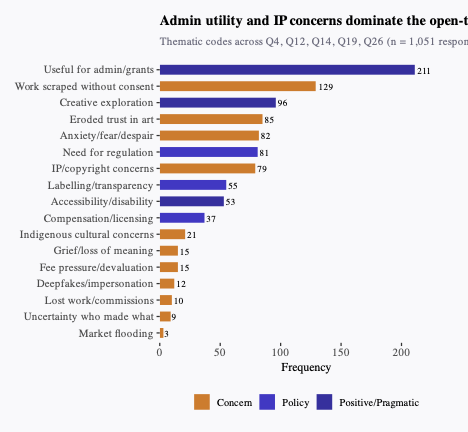
Thematic codes across Q4, Q12, Q14, Q19, Q26 (n = 1,051 responses coded)
Existential Fear
"I feel that AI can create something in a few seconds, that would take me months to create. So I feel less motivated to make art. It feels pointless."
— Survey Respondent, Q19
"I'm very sad about it being used in creative roles and people losing their jobs. I think it will lead to depression, demise and destruction of humanity."
— Survey Respondent, Q26
Cultural Concerns
"I am a modern Celtic fine artist. People are using AI to generate Celtic art. AI cannot reproduce my culture's art form, it looks like spaghetti vomit. It misrepresents Celtic art in every way. Celtic art is an old cultural art form with rules and traditions. And to make it matters worse, people are using the fake AI Celtic art on education platforms, or getting it as tattoos. 😞"
— Survey Respondent, Q19
Indigenous Voices
"Yes, it is already hard enough for genuine First Nations artists to get our art out there without adding AI or digitally created work to the mix, in my opinion all digital works AI or otherwise are not genuine art. In particular anything that is AI generated."
— Survey Respondent, Q4
The Other Perspective
"I love the opportunities AI offers. Animation has been part of my practice for many years. I've seen and used many new technologies as they became available, all exciting, but none offer the sort of possibilities that AI delivers. The trick is to make it work FOR you, to make it your own creative tool that can transform but maintain your own creative signature."
— Survey Respondent, Q19
Takeaways
🔒 IP Protection
Artists want transparent disclosure, consent mechanisms, and compensation when their work trains AI systems.
⚖️ Regulation
Voluntary guidelines are insufficient. Artists support enforceable Codes of Practice and legislation.
🎨 Creative Autonomy
AI can be a tool for efficiency, but it must not erase human authorship, cultural integrity, or economic viability.
Data and analysis available at the project repository
Charles Crabtree
charles.crabtree@monash.edu • charlescrabtree.org